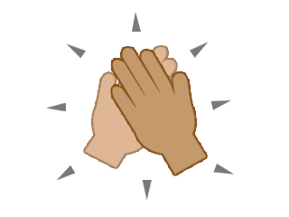
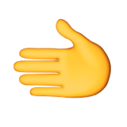

L'art du Check CIE
Tout peuplier digne de ce nom a déjà entendu parler de l’art. Si l’on s’en réfère à son étymologie et ses racines, l’art et l’artisanat viennent du même mot latin. Pourtant, là où le travail de l’artiste résulte sur quelque chose de futile, celui de l’artisan répond à un besoin. Bon j’avoue ça on s’en fout un peu, mais cela met en avant l’essence même du Check CIE. En effet, sa seule existence est déjà futile en soi, non nécessaire, car ça reste un check quoi… Genre bon… pas grand-chose à développer la-dessus… Néanmoins le flow résultant de l’acte du Check CIE est sans égal !! Le style dégagé rendrait même jaloux les plus grands stylistes, Chris Diaur a même confié à la presse les mots suivants : « La plus belle chose qui ne m'ait jamais été donné de voir ne vient pas d’un défilé, la plus innovante des idées qu’il m’ait été donné d’observer ne vient pas d’un travail sur la matière du textile non plus. Non. Toutes ces choses ne sont rien face à la lumière étincelante et le flow infini dégagé par le très saint check : le Check CIE. Voilà la seule vérité. Le Check CIE est au style ce que l’eau est à la vie : il est nécessaire à son existence. Il n’y a pas plus beau ni plus original. Dire que le check CIE n’est pas le summum de la création artistique de ce millénaire serait un mensonge éhonté. » (Extrait de Chris Diaur et Mwa, écrit par Chris Diaur).
Aspect historique :
Aujourd’hui, devant l’ampleur du phénomène Check CIE, de nombreuses croyances courent quant à son origine. Certaines légendes racontent que c’était le Roi Arthur qui, en rentrant vainqueur avec Excalibur, fit le premier Check CIE avec son giga bro Merlin. Néanmoins la véracité de cette légende est aujourd’hui contestée. De fait, il manque ce côté tragique propre au très saint check CIE. Un autre mythe bien plus répandu met en avant le parcours d’un businessman qui, après avoir fait faillite, de rage, effectua le premier Check CIE avec son banquier. Ébloui devant la suavité du move, ce dernier n’eut d’autre choix que d’accorder un prêt ENORME (certains parlent même de 0,00001 folklore de dollar c’est dire !) au businessman, et ce sans aucun intérêt. Après cela, il se relança dans le commerce de chaussettes à motifs et devint multi milliardaire. D’autres sources plus anciennes remontent à l’antiquité. Certains historiens s’accordent à dire que si les carthaginois se sont arrêtés devant les portes de Rome, c’est avant tout parce qu’en voyant l’empereur romain faire un Check CIE avec sa femme, ils comprirent qu’une potentielle mort terrible pourrait ravager toute l’armée de Carthage. Hannibal, général dirigeant alors cette armée vit ses troupes soumises à un véritable choc émotionnel. Comment considérer une personne capable d’effectuer le Check CIE comme un ennemi ? En excellent général, il prit la meilleure décision possible, celle de fuir devant la puissance phénoménale du Check CIE.
Ce qui s'est réellement passé :
Rassurez-vous, Il n’existe qu’une seule vérité concernant la création du très saint Check CIE. Le très saint Check CIE a été créé par un groupe de peupliers qualitativement supérieurs et son histoire surpasse toutes les légendes qui lui sont associées. En effet, dans le cadre de leurs études, Gab (rappelons au passage qu’il est inexistant dans l’esport), Tritri (ou Kric de son vrai surnom) ainsi que Mr. Univers devaient réaliser un exposé pour la terrifiante matière qu’est la CIE (Communication In English). Or par convention, un exposé d’Anglais ne peut pas voir sa préparation débuter avant la veille (voir le matin) de la performance. Plusieurs détails sont alors à prendre en compte :
- Un exposé de CIE dure 25 minutes
- Sa préparation est prévue pour durer plusieurs semaines
- La CIE a lieu le mercredi
- Il est mardi soir, fin des cours : 18h30
C’est avec ces conditions initiales que nous débutons notre démonstration. Il est important de s’imaginer trois personnes dont la soirée et la nuit entière (en termes plus beaufs : toute la night) se sait condamnée par des heures de travail intense. Tout projet de divertissement du soir ou de quelconque vaisselle devient alors inenvisageable et le sommeil perd petit à petit de son importance. Par conséquent, la fin de semaine se retrouve elle aussi compromise par une forte envie de dormir. Plus directement, cette situation assurait pour les trois peupliers de se retrouver dès leur arrivée chez eux sur Discord pour organiser leurs recherches.
Avec cela en tête, Gab, Tri et Mr. Univers se sentir connectés d’un lien certes tragique, mais profond. Ce lien se devait d’être exploité dans le but d’aboutir à quelque chose de productif. Quelque chose avec une signification puissante, qui puisse à la fois se traduire par "sois fort" ou "donne tout" et par un gros "à toute" des familles. Indeed nous direz-vous. Indeed naquit le très très saint Check CIE. Il fut mis au point pour transmettre aussi bien le plaisir d’une fin de journée que le ff mental d’un exposé d’Anglais à préparer pour le lendemain. Tout un paradoxe.
Aspect technique :
Le mouvement peut sembler aisé au premier abord, mais ne vous laissez pas trahir : le Check CIE est bien plus technique qu'il n'y paraît. Pour aider nos très cher fans (totalement fous de l'équipe Démonstration Irréfutable, c'est bien connu), nous vous proposons de décomposer la bête en 2 phases que, pour des raisons de praticité nous appelerons phase de joie et phase de deuil.
Phase de joie :
Fin de journée. Il est l'heure de rentrer chez soi et un jour de plus à été effacé en vue du très saint weekend. Il est temps de taper pleinement dans la main de son camarade (à prononcer avec un lourd accent Russe) en sortant sa plus belle face : bouche et yeux grands ouverts, regard droit vers l'opposant. La position de cet émoji et la tête au naturel de Mr. Univers devraient pouvoir illustrer le propos correctement.
Phase de deuil :
Infâme. CIE toute la night qui s'anonce, c'est la seule chose qui ne puisse occuper l'esprit. La procédure à suivre en ce moment précis est de tirer sa plus sombre gueule d'enterrement. Très important : garder son sérieux, ne surtout pas rire ou sourire pendant le deuil de son sommeil, ce serait évidemment très mal venu. Cependant il faut finir de dire au revoir (à toute à l'heure of course). En gage de non-motivation, vous allez pour serrer la main de votre camarade mais vous ne serrez que le bout de ses doigts (on parle ici de la dernière phalange uniquement). Rendez vous compte, à l'usage, qu'il est impossible de serrer de cette façon mais ça c'est un pro tips et rien d'autre. Enfin, voici l'illustration de cette seconde et dernière phase.
Erreur à ne pas faire
Une erreur commune comise par les amateurs dans l'art du check CIE est de négliger la phase de deuil. En effet, c'est bien celle-ci qui démarque le check CIE d'un simple check d'un mec content... Ne vous faites pas avoir par Moustapha ou Gab (qui ne donne pas tout) car ceux-ci sont des maitres dans l'art du self controle, mais la phase de deuil est la phase la plus difficile à maitriser dans ce check (en même temps il n'y en a que 2...). La difficulté de cette phase résulte principalement dans le fait de ne pas se taper une énorme barre en voyant la gueule de l'autre. Il est très important de garder son expresssion dépressive jusqu'à ce que le check soit finit, c'est-à-dire lorsque les deux mains se quittent.
Maintenant que la vérité est établie, sachez que le très saint Check CIE ne doit en aucun cas être pris à la légère. Il possède une signification lourde, et se revendique de nature puissante et contestataire.